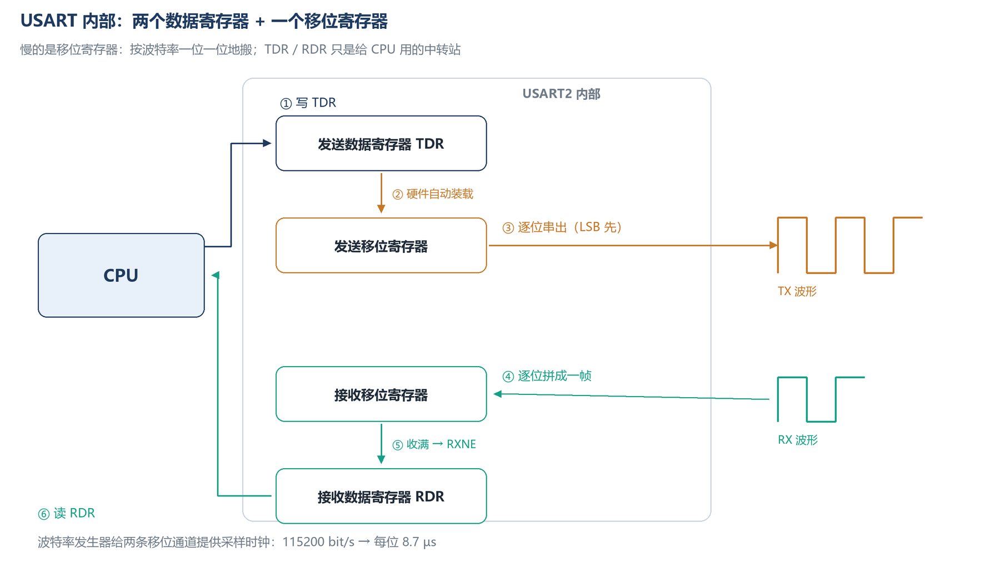
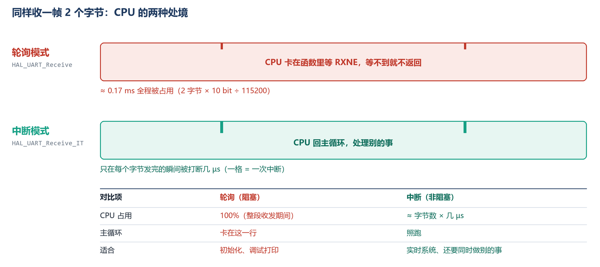
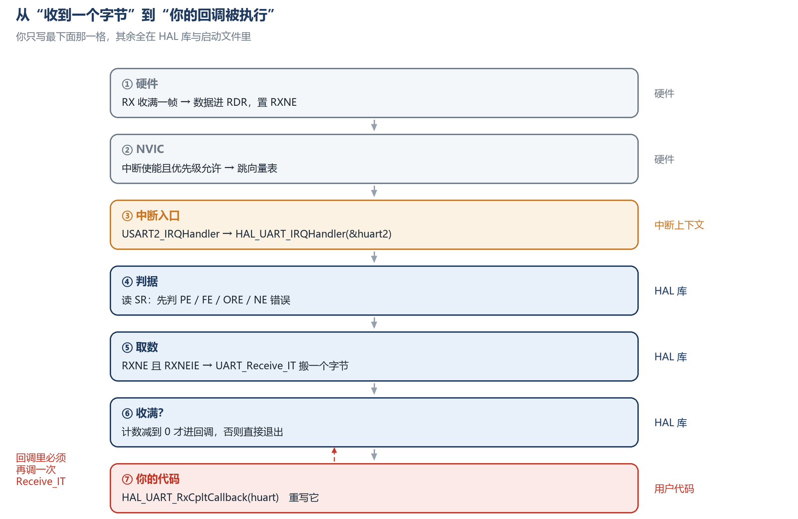
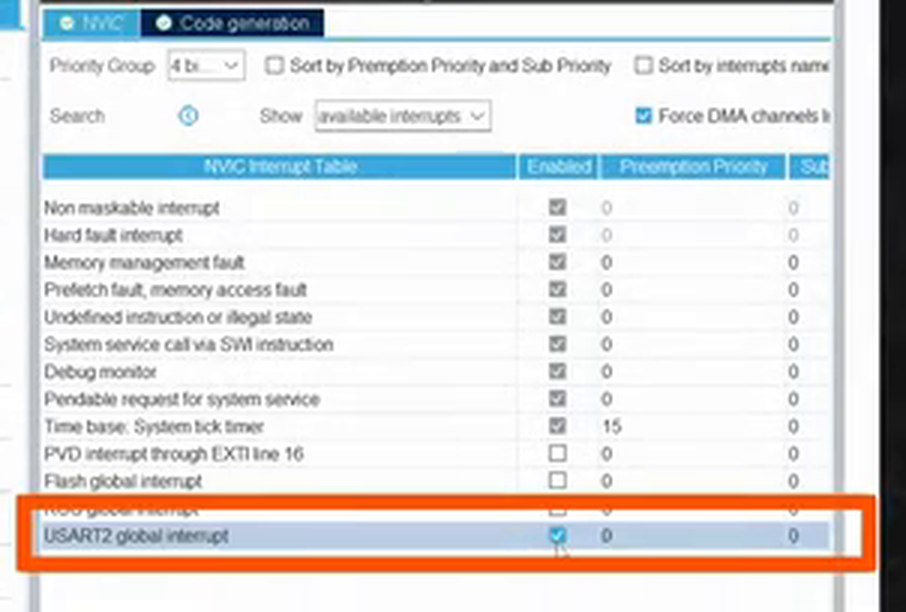
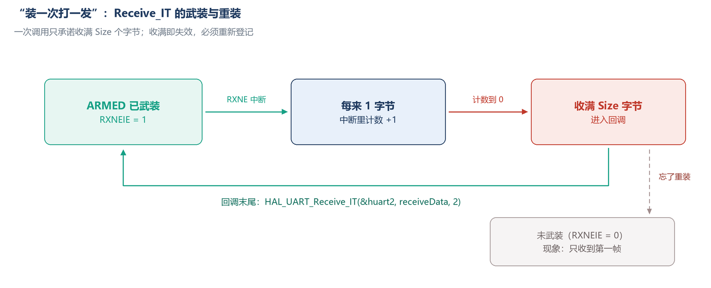
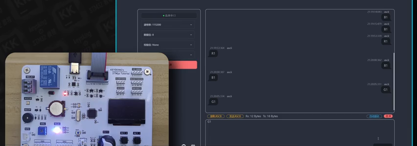

工程速览：w3 现在怎么控制灯
串口的用法只有三步：收两字节、回显、写引脚。
w3 是 CubeMX 生成的 CMake 工程，芯片 STM32F103C8T6，时钟走内部 HSI 8 MHz，没有开 PLL。串口用 USART2，PA2 发、PA3 收，115200 bit/s、8 位数据、无校验、1 位停止。板上三个 LED：PA6 红、PA7 蓝、PB0 绿，低电平点亮。
协议只有两个字节：第一个是颜色字母 R / G / B，第二个是 1（亮）或 0（灭）。程序收到两个字节后先原样回显，再按第一个字节选灯、按第二个字节决定亮灭。
main.c 里只有一个 while(1)，按顺序做四件事：阻塞收两字节、阻塞回显、算出 state、写引脚。这段代码能跑，代价有三条：
- 一帧的 0.35 ms 里主循环停住，什么都做不了。
- 一次只处理一帧，下一帧必须等这一帧处理完。
- 接收超时写的是
HAL_MAX_DELAY，程序分不清"对方没发"和"自己卡死"。
轮询版逐行读
先看清它现在怎么卡住，才知道中断要换掉哪一段。
去掉和串口无关的部分，现在的 main.c 是这样：
/* USER CODE BEGIN 2 */
uint8_t receiveData[2];
/* USER CODE END 2 */
while (1)
{
HAL_UART_Receive(&huart2, receiveData, 2, HAL_MAX_DELAY);
HAL_UART_Transmit(&huart2, receiveData, 2, HAL_MAX_DELAY);
GPIO_PinState state = GPIO_PIN_SET;
if (receiveData[1] == '1') {
state = GPIO_PIN_RESET;
}
if (receiveData[0] == 'R') {
HAL_GPIO_WritePin(RED_GPIO_Port, RED_Pin, state);
}
else if (receiveData[0] == 'G') {
HAL_GPIO_WritePin(GREEN_GPIO_Port, GREEN_Pin, state);
}
else if (receiveData[0] == 'B') {
HAL_GPIO_WritePin(BLUE_GPIO_Port, BLUE_Pin, state);
}
//HAL_UART_Transmit_IT(&huart2, receiveData, 2);
}逐段看：
receiveData写在 USER CODE BEGIN 2 里，是 main 的局部变量。这里能用，是因为 main 不会返回、栈帧一直活着；改中断版时必须挪到文件级，理由放在 6.1 节。- 两次调用的超时都是
HAL_MAX_DELAY：等不到就一直等。 HAL_UART_Transmit把刚收到的两个字节原样发回去，这就是回显。它同样阻塞，2 字节又是 174 µs。- state 初值是
GPIO_PIN_SET（灭），第二个字节为 '1' 时改成GPIO_PIN_RESET。这块板子低电平点亮：发 R1 才亮，发 R0 灭。改成中断版，这个极性要原样保留。 - 三个分支按第一个字节选引脚：R → PA6，G → PB0，B → PA7。
GREEN_GPIO_Port是 GPIOB，RED 和 BLUE 在 GPIOA，跨了两个端口。 - 末尾那行被注释掉的
HAL_UART_Transmit_IT说明只把发送换成非阻塞版没有用：接收还卡在上一行的HAL_UART_Receive上，主循环照样出不来。
一帧的时间账
115200 bit/s 下一位 8.68 µs，一个 10 位的帧（1 起始 + 8 数据 + 1 停止）86.8 µs。收 2 个字节 173.6 µs，回显再发 2 个字节 173.6 µs，一帧合计约 0.35 ms，全程 CPU 都耗在这两行里。
这颗芯片跑在 8 MHz 上，0.35 ms 相当于两千八百多个时钟周期。每来一帧，CPU 就有这么长一段时间只能盯着串口。
算一遍：2 × 10 bit ÷ 115200 = 173.6 µs，收发各一遍，347 µs。串口慢是物理决定的，改代码改不掉。
数据在 USART 里的流向
中断能接手，靠的是 TDR 和 RDR 这两级缓冲。
要看懂中断为什么能接手，先得看清 USART 里面有几个零件。最小配置是四个寄存器：发送方向的 TDR 和发送移位寄存器，接收方向对称，接收移位寄存器和 RDR，另有一个波特率发生器给两条移位通道提供采样时钟。
双缓冲：两个寄存器各管一段
移位寄存器做的是慢活：一位一位地搬，速度由波特率定死。只有它的话，CPU 就得等它搬空才能写下一个字节，慢活就变成了 CPU 自己的慢活。
TDR 是那道缓冲。CPU 把字节写进 TDR 就可以走（只要 TXE 还是 1），硬件在移位寄存器腾空的瞬间把 TDR 的内容搬过去。"CPU 写"和"线路发"于是成了两条并行的时间线，中断能插进来，就插在这个缝里。
RDR 是反过来的同一个道理：硬件把收满的字节放进 RDR，CPU 什么时候来取都行，只要赶在下一次收满之前，否则触发 ORE 溢出。

一个具体字节的旅程
以 'R' 为例：ASCII 是 0x52，二进制 0101 0010。这个字节写进 TDR，搬进移位寄存器，然后低位先出，线上依次出现 0 1 0 0 1 0 1 0，前后各加一个起始位（低）和一个停止位（高）。115200 bit/s 下每位 8.68 µs，10 位一帧 86.8 µs。
接收端必须知道帧长
发送多少由 CPU 定，接收多少由对方定，这是串口最别扭的地方。线上的电平只说明"来了一位"，没有哪里写着"这一帧到此为止"。轮询版靠 Size 数着收；中断版同样要 Size，只是数数的人从 CPU 换成了 HAL：每进一次中断搬一个字节、计数器减一，减到零才算这次接收完成，才去调回调。
只发 1 个字节时，HAL_UART_Receive_IT(&huart2, receiveData, 2) 的回调不会进来：它承诺的是收满 2 个，来 1 个就安静收下 1 个，然后继续等剩下 1 个。这也是协议必须是定长两字节的原因。
轮询的代价
这 0.35 ms 里，CPU 归串口所有。
把上面那两行拆开看：HAL_UART_Receive 从进门到返回，中间只有一个 while，反复查 RXNE 和超时；HAL_UART_Transmit 同理，查 TXE 和 TC。函数返回之前，while(1) 里后面的代码一行都不会执行。

阻塞说的是状态
阻塞说的是状态，不是时长：CPU 一直在等，程序因此无法向下执行。串口本身就慢，一帧 0.35 ms，物理决定，改不了。代价是这 0.35 ms 里 CPU 做不了别的事：这颗芯片跑 8 MHz，够扫一遍按键、刷半屏显示，或者跑几个周期的控制环。
另外两个副作用
- 吞吐被这一帧卡住：处理完才能收下一帧。串口助手连发三帧，第二、三帧在线上等着，对方发得快，最先丢的是数据。
- 无法判断对方是否在线：
HAL_MAX_DELAY让HAL_UART_Receive永不超时。程序停在这一行时，和死机在现象上没有区别。
中断接管的方式
轮询是"我现在就去取"，中断是"我先登记，够了再叫我"。
中断接收和轮询接收的分工不一样。轮询是"我现在就去取"，中断是"我先登记，之后每来一个字节由硬件接手，够了再叫我"。叫你的这条路径一共七步。

一个外设只有一个中断向量
w3 的 Core/Src/stm32f1xx_it.c 里已经有这一段：
void USART2_IRQHandler(void)
{
/* USER CODE BEGIN USART2_IRQn 0 */
/* USER CODE END USART2_IRQn 0 */
HAL_UART_IRQHandler(&huart2);
/* USER CODE BEGIN USART2_IRQn 1 */
/* USER CODE END USART2_IRQn 1 */
}它能出现在生成代码里，说明 .ioc 中 NVIC → USART2 global interrupt 已经勾上了。这个函数只有一句实际调用，是因为每个 USART 只有一个中断向量：发送寄存器空、发送完成、收到数据、各种错误，这么多事件在 NVIC 里只占一个编号。中断服务函数没法知道你为什么进来，只能再读一次 SR。HAL_UART_IRQHandler 存在的理由就是这个，它进门第一件事就是读 SR。
HAL_UART_IRQHandler 里的判据
判据就这几行（原文照抄，注释删了）：
uint32_t isrflags = READ_REG(huart->Instance->SR);
uint32_t cr1its = READ_REG(huart->Instance->CR1);
uint32_t errorflags = 0x00U;
errorflags = (isrflags & (uint32_t)(USART_SR_PE | USART_SR_FE |
USART_SR_ORE | USART_SR_NE));
if (errorflags == RESET)
{
/* UART in mode Receiver ------------------------------------- */
if (((isrflags & USART_SR_RXNE) != RESET) &&
((cr1its & USART_CR1_RXNEIE) != RESET))
{
UART_Receive_IT(huart);
return;
}
}
/* 下面依次是 PE / FE / NE / ORE 各错误分支 …… */顺序是：
- 先读 SR 和 CR1。SR 里是发生了什么，CR1 里是你允许了哪些，两边同时成立才算数。
- 错误先判（PE 校验错、FE 帧错、ORE 溢出、NE 噪声）。有错就走错误分支，不搬数据——出错的那个字节本来就不可信。
- RXNE && RXNEIE 才是"收到数据且你开了接收中断"。满足就调
UART_Receive_IT(huart)并立刻 return。这个 return 保证一次中断只处理一件事。 UART_Receive_IT不带HAL_前缀，它是 HAL 内部的 static 函数，不给你调。你只需要知道它做三件事：搬一个字节、计数减一、减到零调回调。
回调：__weak 留的口子
HAL 库在 stm32f1xx_hal_uart.c 末尾声明了两个 __weak 空函数：
__weak void HAL_UART_TxHalfCpltCallback(UART_HandleTypeDef *huart)
{
/* Prevent unused argument(s) compilation warning */
UNUSED(huart);
/* NOTE: This function should not be modified, when the callback is needed,
the HAL_UART_TxHalfCpltCallback could be implemented in the user file */
}
__weak void HAL_UART_RxCpltCallback(UART_HandleTypeDef *huart)
{
UNUSED(huart);
/* NOTE: This function should not be modified, when the callback is needed,
the HAL_UART_RxCpltCallback could be implemented in the user file */
}__weak 是弱符号：库里这个定义只占位。你在自己的文件里写个同名函数（不带 __weak），链接器就用你的、丢掉库里的。反过来，改库文件里那份是自找麻烦——下次 CubeMX 重新生成，整个 stm32f1xx_hal_uart.c 会被覆盖回去。
改造：四处改动
缓冲区、武装、回调、主循环，只动这四处。
把 w3 从轮询改成中断，main.c 里只需要动四个地方，引脚、时钟、串口参数一个都不用碰。Core/Src/stm32f1xx_it.c 也不用改——USART2_IRQHandler 已经在了。
6.1 第一处：缓冲区挪到文件级
现在 receiveData 是 main 的局部变量。对轮询版没影响，但中断是异步来的，回调执行时 main 可能正停在任意一行；HAL 存的是这个数组的地址，能否一直有效，取决于"main 的栈帧永远不回收"这个隐含前提，编译器还有权把它优化进寄存器或复用。挪到文件级是零成本的保险：
/* USER CODE BEGIN PV */
uint8_t receiveData[2]; /* 中断里要访问，放到文件级 */
/* USER CODE END PV */同时把 USER CODE BEGIN 2 里那行 uint8_t receiveData[2]; 删掉，否则会重名。
6.2 第二处：初始化时武装一次
把 USER CODE BEGIN 2 里的收发代码换成一句：
/* USER CODE BEGIN 2 */
HAL_UART_Receive_IT(&huart2, receiveData, 2); /* 只在这里武装一次 */
/* USER CODE END 2 */这一句不搬数据，只做登记：把数组地址、长度 2 写进 huart2，打开 RXNEIE，然后立刻返回。从此每来一个字节，硬件触发一次中断，由 HAL 计数；满 2 个才调回调。
6.3 第三处：把回调写在 USER CODE BEGIN 4
回调放在 main.c 末尾的 USER CODE BEGIN 4 里，抄的是这个工程自己的逻辑，引脚名一个没换：
/* USER CODE BEGIN 4 */
void HAL_UART_RxCpltCallback(UART_HandleTypeDef *huart)
{
/* 1. 回显：用 _IT 版，中断里不能阻塞 */
HAL_UART_Transmit_IT(&huart2, receiveData, 2);
/* 2. 解析：第 1 字节选灯，第 2 字节定亮灭（低电平点亮） */
GPIO_PinState state = (receiveData[1] == '1') ? GPIO_PIN_RESET : GPIO_PIN_SET;
switch (receiveData[0]) {
case 'R': HAL_GPIO_WritePin(RED_GPIO_Port, RED_Pin, state); break;
case 'G': HAL_GPIO_WritePin(GREEN_GPIO_Port, GREEN_Pin, state); break;
case 'B': HAL_GPIO_WritePin(BLUE_GPIO_Port, BLUE_Pin, state); break;
default: break;
}
/* 3. 重新武装：不写这一句，就只收得到第一帧 */
HAL_UART_Receive_IT(&huart2, receiveData, 2);
}
/* USER CODE END 4 */改动里有两处容易照抄错：state 的极性不能反（这块板子是 '1' 写 RESET 点亮），GREEN 在 GPIOB，RED 和 BLUE 在 GPIOA，两个端口都要写到。
工程里只有一个串口，所以省掉了 if (huart->Instance != USART2) return; 这一句判断；以后加了 USART1 / USART3，回调会被它们共用，就要把这句加回来，否则别的串口收完数据也会跑这里的逻辑。
6.4 第四处：清空 while(1)
/* USER CODE BEGIN WHILE */
while (1)
{
/* 收发已经交给中断，这里放别的任务：按键扫描、显示刷新、控制环 */
/* USER CODE END WHILE */
}原来那 10 行收发代码整段删掉。删完主循环是空的；空出来的时间就是这次改造要的东西。
6.5 中断使能：这个工程已经开着
新建工程时要在 CubeMX 的 System Core → NVIC 里勾上 USART2 global interrupt，位置见下图。w3 不需要这一步：stm32f1xx_it.c 里已经生成了 USART2_IRQHandler，说明 .ioc 里这一项本来就是勾上的。

漏勾的后果很隐蔽：程序能编译、能下载、能跑，HAL_UART_Receive_IT 也返回 HAL_OK，但中断永远不触发，回调永远不进来。表现出来只是"发数据没反应"，很容易让人怀疑半天硬件。
6.6 中断里只调 _IT 版发送
回调跑在中断上下文里，主程序被它打断。在这里调阻塞版的 HAL_UART_Transmit，等于在中断里再站 174 µs，这期间主循环停摆，别的中断（包括串口自己的下一次接收）也被挡住。回显用 HAL_UART_Transmit_IT：登记一下就返回，发完再进 TxCpltCallback。
回调里也不要 HAL_Delay、等标志或跑长循环。中断里只做搬数据、置标志这类短活，重活留给主循环。
武装与重装
_IT 版只承诺一次，收满就失效。
HAL_UART_Receive_IT 的 _IT 说的是用中断方式接收，但它只承诺一次：收满 Size 个字节，这次接收就结束，中断使能随之失效。要收下一帧，得重新登记。

HAL_UART_Receive_IT 把状态机带回起点。忘记重装，RXNEIE 就一直是 0，中断不再产生，现象是"只收到第一帧"。症状与诊断
"忘记重装"这个 bug 难查，因为它不报错：
- 第一次发 R1，灯亮、回显正常，看起来成功了。
- 第二次发 R0，没有反应，串口助手什么都收不到。
- 重新上电，又只管第一次。
诊断办法：回调里翻转一个 LED 或者打个断点，看它是每帧进一次还是只进一次。只进一次就是没重装；一次都不进，就是 NVIC 没勾或者 Size 和实际帧长对不上。
重装点只能放在回调里
把 HAL_UART_Receive_IT 放进 while(1) 看起来也能跑，时序上是错的：主循环比串口快得多，数据还没收完它就会反复调用，每次都把计数清零、把 RxState 重置，结果就是"上一次的数据还没接收完，就又开启了新的接收"。
正确的重装点只有一处：上一帧确实收完的地方，也就是回调末尾。谁结束了这次传输，谁负责开下一次。
上板：改前改后
敲 R1、R0、G1、B1，看灯和回显。
串口助手设 115200、8 位、无校验、1 位停止，发送框里敲两个字符：R1、R0、G1、B1。每发一组，对应的灯亮或灭，接收区同时出现同样的两个字节。

中断版跑起来应该看不出区别。看不出区别就说明改对了：功能一样，主循环自由了。连续发十组，每一帧都得处理，而不是只处理第一帧。
自己验证的四步
- 第 1 步，先发一个。发 R1，看红灯是否亮。亮说明"收 + 解析 + 写引脚"这条链通了。
- 第 2 步，再发一次。再发 R0，红灯应灭。这一步专治"忘记重装"，没反应就回去看第七节。
- 第 3 步，看回显。接收区应出现与发送内容一致的 2 个字节。没有回显但有动作，说明解析通了而 Transmit_IT 那一步有问题。
- 第 4 步，拆开发。把 R 和 1 分两次发送，间隔几百毫秒。仍然正常，说明"收满 2 个才回调"在起作用；如果把 Size 写成 1，这里就会拆成两次回调、灯的反应也会分成两半。
七个容易踩的坑
表按 w3 这个工程整理，上板出问题时对着查。
| 现象 | 原因 | 正确做法 |
|---|---|---|
| 灯亮灭反了：发 1 灭、发 0 亮 | 这块板低电平点亮，state 的极性和硬件反了 | '1' 对应 GPIO_PIN_RESET；换板子先确认共阳还是共阴 |
| 第二次发数据没反应，重新上电又能收一次 | 回调里忘了再次调用 HAL_UART_Receive_IT，RXNEIE 已失效 | 回调末尾重装；重装点只在"上一帧收完"处 |
| 偶尔收到数据、偶尔乱，或数据被改写 | receiveData 还留在 USER CODE BEGIN 2，是 main 的局部变量 | 挪到 USER CODE BEGIN PV，用文件级数组 |
HAL_UART_Receive_IT 返回 HAL_BUSY | 上一次接收还没完成就又武装了，典型是在 while(1) 里反复调 | 只在初始化时武装一次，之后只在回调里重装 |
| 编译通过、下载成功，但回调永远不进 | CubeMX 的 NVIC 里没勾 USART2 global interrupt | System Core → NVIC 勾上并重新生成 |
| 改了 HAL 库里的回调，下次生成代码就没了 | 用户代码写进了 stm32f1xx_hal_uart.c | 利用 __weak：在 main.c 重写同名函数 |
| 主循环变卡、其他中断响应变慢 | 在回调里调了阻塞版 HAL_UART_Transmit 或 HAL_Delay | 中断里只用 _IT 版；重活丢给主循环 |
定长接收也是这套做法的边界：_IT 版解决的是收满固定字节数的阻塞，项目里数据往往变长（一帧 JSON、一条 AT 指令、一包蓝牙数据），Size 没法事先写死。
边界：变长与 DMA
定长是这一版的边界，变长和 DMA 是下一步。
改造到这里，w3 的串口收发不再堵塞：收和发都换成了 _IT 版，while(1) 空出来了。剩下两个问题还没解决：
- 变长接收。协议现在是死的两字节，改成不定长就得另找判帧尾的办法。
- 进一步降低 CPU 占用。每来一个字节仍要进一次中断，115200 下 87 µs 一次，波特率再高就会很密。
两个方向的解法是现成的：HAL_UARTEx_ReceiveToIdle 用空闲中断判帧尾，天然支持变长；DMA 让硬件把数据直接搬进内存，连中断都省了。这两条都建立在这一版的基础上。
自测题
五道题，答案跟在后面。
Q1 w3 收一帧（2 字节）再加回显，CPU 大约被占用多久？怎么算的？
答 约 0.35 ms。收 2 字节与回显 2 字节各 2 × 10 bit ÷ 115200 = 173.6 µs，两段相加约 347 µs。
Q2 receiveData 为什么不能留在 USER CODE BEGIN 2 里？
答 那是 main 的局部变量。中断异步进入回调时 HAL 会往这个地址写数据，能否有效取决于 main 的栈帧一直不回收，编译器也可能把它优化掉。放到 PV 是零成本保险。
Q3 HAL_UART_Receive_IT(&huart2, receiveData, 2) 调用之后，函数内部做了什么？
答 不搬数据。它把数组地址与长度 2 记进 huart2，清状态，打开 RXNEIE，然后立即返回。搬运发生在每次 RXNE 中断里，由 UART_Receive_IT 完成。
Q4 w3 的 stm32f1xx_it.c 里为什么已经有 USART2_IRQHandler？
答 因为 .ioc 里勾了 USART2 global interrupt。CubeMX 只为使能了的中断生成服务函数，所以这一版不用回头改 CubeMX 配置。
Q5 只收到第一帧数据，之后再也收不到，最可能的原因是什么？
答 回调里没有再次调用 HAL_UART_Receive_IT。_IT 版一次只承诺收满一次，收满后中断使能失效。
附录：函数与标志速查、术语表
对上板调试时最常查的几张表。
A.1 HAL 串口函数
| 函数 | 作用 | 会不会阻塞 |
|---|---|---|
HAL_UART_Transmit(huart, buf, Size, Timeout) | 轮询发送 Size 个字节 | 是，整段占用 CPU |
HAL_UART_Receive(huart, buf, Size, Timeout) | 轮询接收 Size 个字节 | 是，收不满就等 |
HAL_UART_Transmit_IT(huart, buf, Size) | 登记发送，发完进 TxCpltCallback | 否，立即返回 |
HAL_UART_Receive_IT(huart, buf, Size) | 登记接收，收满进 RxCpltCallback | 否，立即返回 |
HAL_UART_IRQHandler(huart) | 中断总入口，读 SR 分发事件 | 在中断上下文执行 |
HAL_UART_RxCpltCallback(huart) | 接收完成回调，用户重写 | 在中断上下文执行 |
HAL_UART_TxCpltCallback(huart) | 发送完成回调，用户可重写 | 在中断上下文执行 |
HAL_UART_TxHalfCpltCallback(huart) | 发送过半回调 | 在中断上下文执行 |
A.2 寄存器与标志
| 名字 | 全称 / 含义 | 在这套机制里的角色 |
|---|---|---|
| TDR | Transmit Data Register，发送数据寄存器 | CPU 写入待发字节的缓冲 |
| RDR | Receive Data Register，接收数据寄存器 | 硬件放收满字节的缓冲 |
| SR | Status Register，状态寄存器 | HAL_UART_IRQHandler 靠它分辨事件 |
| CR1 | Control Register 1 | 看 RXNEIE 等中断使能位 |
| TXE | Transmit data register Empty | TDR 空，可以写下一个字节 |
| TC | Transmission Complete | 整帧发完，HAL_UART_Transmit 靠它返回 |
| RXNE | Read data register Not Empty | RDR 里有数据，触发接收中断 |
| ORE / FE / PE / NE | 溢出 / 帧错 / 校验错 / 噪声 | 错误分支先于数据分支处理 |
A.3 术语表
| 术语 | 解释 |
|---|---|
| 阻塞 / 非阻塞 | 函数在完成前是否占住 CPU。轮询版阻塞，_IT 版非阻塞。 |
| 轮询（polling） | CPU 反复查标志位来判断外设状态。 |
| 中断（interrupt） | 外设通过 NVIC 打断 CPU，让 CPU 转去执行中断服务函数。 |
| 回调（callback） | HAL 在事件发生时反过来调用你写的函数，__weak 是它的实现方式。 |
| 武装 / 重装 | 调用 HAL_UART_Receive_IT 登记一次接收；收满后需重新登记。 |
| 中断上下文 | 中断服务函数里的执行环境：不能阻塞、不能长时间占用。 |